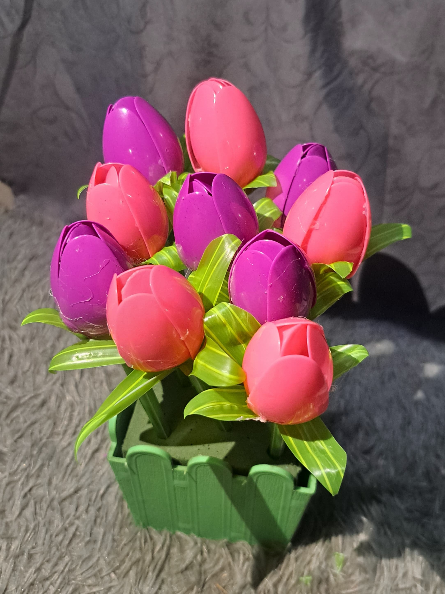

Kreasi Bunga Cantik dari Sampah Plastik

Deskripsi
Kreasi bunga cantik ini terbuat dari sedotan dan sendok plastik bekas yang dikreasikan sekreatif mungkin sehingga menjadi produk yang lebih menarik.
Alat & Bahan
- Sendok Plastik
- Sedotan
- Lem tembak
- Kawat
- Gunting
- Pot Bunga
- Spons
Cara Pembuatan
- Potong bagian ujung sendok membentuk lingkaran sebagai mahkota bunga (untuk satu kelopak bunga membutuhkan 6 buah sendok)
- Buat bagian dalam mahkota dengan merekatkan dua buah sendok pada kawat menggunakan lem tembak
- Rekatkan tiga buah sendok membentuk lingkaran, masukan bagian dalam mahkota (dua buah sendok yang sudah dibuat sebelumnya), dan tutup mahkota bunga menggunakan satu buah sendok
- Siapkan sedotan untuk membuat kelopak bunga dan tangkai bunga
- Potong satu buah sedotan menjadi empat bagian dan bentuk sedotan menjadi kelopak bunga
- Rekatkan empat buah sedotan untuk menjadi kelopak bunga dan masukan kelopak bunga ke dalam bagian bawah mahkota bunga
- Masukan satu buah sedotan pada bunga untuk menjadi tangkai bunga
- Buatlah beberapa bunga
- Rangkai bunga ke dalam pot yang sudah diberi spons
← Kembali